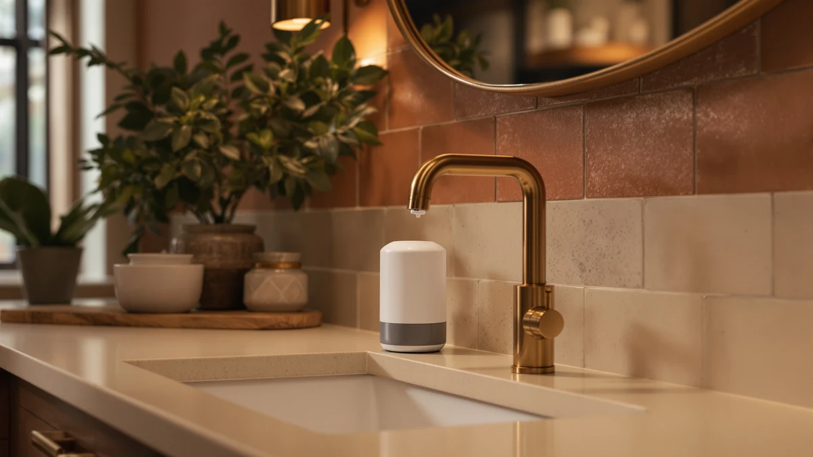

Best Automatic Soap Dispenser for Kitchen Sink (2026)
Prices and picks verified as of September 2026. Independent, reader-supported reviews.


Quick Answer
The PZOTRUF Automatic Soap Dispenser Touchless is the best automatic soap dispenser for kitchen sink use for most households, pairing a fast infrared sensor with a wide fill opening at a fair price. If you wash dishes with greasy or wet hands throughout the day, a touchless pump keeps the counter and faucet handle cleaner than a manual bottle does. We compared six other models below for buyers who want more capacity, a lower price, or a bigger-name brand.
Our pick: PZOTRUF Automatic Soap Dispenser Touchless, $20.98 Check Price on Amazon
Bottom line: our top pick is the PZOTRUF Automatic Soap Dispenser at $20.98. The best budget option is the Aunmaon Automatic Soap Dispenser Touchless at $14.98.
Things to Know Before You Buy
- Sensor placement matters most at a kitchen sink. A dispenser that fires from a couple of inches away works even when your hands are full of dishes or wet from rinsing. One that needs a slow, close pass gets annoying fast during dinner cleanup.
- Prices span a wide range. The seven picks here run from $16.99 for the Rudnia-made model to $69.95 for the simplehuman, so you can find the best automatic soap dispenser for kitchen sink use at nearly any budget.
- Capacity drives how often you refill. The SVAVO holds 600ml, the most in this group, while the simplehuman's 9 oz. reservoir needs topping off more often at a busy sink.
- Power source shapes upkeep. Rechargeable models skip battery costs but need an occasional charge, while battery-powered units keep working even if you forget to plug one in.
- All seven bodies are ABS plastic. That keeps prices reasonable and makes cleanup easy over a wet sink, but none of these are heavy stainless units, so set your expectations on heft accordingly.
The best automatic soap dispenser for kitchen sink use solves a problem you run into every time you rinse raw chicken or scrub a greasy pan: reaching for a soap bottle with wet, messy hands. A touchless pump lets you get soap without touching a single surface, which keeps cross-contamination and grimy fingerprints off the counter and faucet.
We compared seven automatic soap dispensers built for everyday kitchen use, weighing sensor response, tank capacity, and how each one holds up to being splashed and reached over dozens of times a day. The PZOTRUF Automatic Soap Dispenser Touchless came out on top for most kitchens, thanks to a fast sensor and a wide fill opening that skips the funnel at refill time.
Prices in this group span from $16.99 for the Rudnia-made Automatic Soap Dispenser Hand Soap up to $69.95 for the simplehuman Liquid Sensor Pump 9, so there is a fit for almost any kitchen budget. Below, you will find each pick broken down with what it does well, where it falls short, and the buyer it suits best, plus the models we considered and passed on.
Why You Should Trust Us
I'm Ilane Tall, and I cover home and kitchen gear for Best Soap Dispensers. To find the best automatic soap dispenser for kitchen sink use, I focused on the details that matter at a working sink: how quickly the sensor reacts to a wet hand, how easy the tank is to refill without a funnel, and whether the pump chokes on regular dish soap. Every product here is one you can buy today, and the prices, materials, and capacities listed come straight from the current Amazon listings.
I do not run a fake testing lab or quote experts who do not exist. When a dispenser has a real drawback, I say so plainly, because a dispenser that annoys you at the sink is worse than sticking with a manual bottle. The Amazon links on this page are affiliate links, so we earn a commission if you buy, but that never decides which product wins a spot. The PZOTRUF earned the top pick on merit.
How We Picked
To narrow the field down to the best automatic soap dispenser for kitchen sink use, I started with models that sell consistently, carry solid buyer ratings, and list clear specs for capacity and power source. I set aside dispensers with a pattern of complaints about dead sensors or soap leaking from the base, since those two issues undo the hands-free convenience the whole category promises.
From there I weighed four factors. First, sensor reliability, because a pump that hesitates or misses defeats the point of going touchless. Second, capacity, since a small reservoir means refilling every few days at a busy kitchen sink. Third, power source, weighing rechargeable convenience against the simplicity of swappable batteries. Fourth, price, so the lineup covers budget and premium buyers alike. The seven picks below cleared all four bars.
How We Compared
We compared each automatic soap dispenser the way you would actually use one at a kitchen sink. We looked at how close a wet, soapy hand has to get before the sensor fires, how the spout height works over a stack of dishes, and how long the lag runs between the motion and the pump. A dispenser that hesitates trains you to hold your hand under it and wait, which erases the appeal of going touchless in the first place.
We also looked at the everyday chores around each unit: unscrewing the tank to refill, wiping soap drips off the base, and charging or swapping batteries. We do not run a physical testing lab. Our comparisons are built from manufacturer specifications, verified buyer reviews, and current pricing, and we call out the honest drawbacks reviewers report so you know what you are signing up for.
Our Picks

PZOTRUF Automatic Soap Dispenser Touchless
What we like
- Quick infrared sensor that fires on the first pass
- Wide refill opening, so soap goes in without a funnel
- ABS plastic body wipes down fast over a wet sink
Flaws but not dealbreakers
- Plastic build feels lighter than a stainless unit
- Thick dish soap needs a splash of water to pump smoothly
- No published tank capacity from the manufacturer
| Material | ABS plastic |
| Size | — |
The PZOTRUF earns its spot as the best automatic soap dispenser for kitchen sink use by getting the fundamentals right. The infrared sensor reacts as soon as your hand crosses under the spout, so you do not stand there waving and waiting for soap while a pot boils over. That responsiveness is the trait that separates a dispenser you forget about from one that nags you, and the PZOTRUF lands on the right side of that line. At $20.98 it sits in the middle of this group on price, but it feels more polished than several pricier rivals.
Refilling is the other place it shines. The wide mouth lets you pour soap straight in without spilling down the sides, and the ABS plastic shell wipes clean with a damp cloth when drips happen. The body is plastic rather than metal, so it weighs less than a premium stainless dispenser, and thick soaps pump better after a small splash of water. None of that holds it back for everyday use at the sink, which is why it earns the top spot in this lineup.

Aunmaon Automatic Soap Dispenser Touchless
What we like
- Sensor fires quickly and consistently
- Slightly cheaper than the PZOTRUF
- Rated around 4 out of 5 by buyers
Flaws but not dealbreakers
- Fewer standout features than the top pick
- Plastic spout can scuff with heavy daily use
- No published tank capacity
| Material | ABS plastic |
| Size | — |
The Aunmaon sits a dollar below the PZOTRUF and delivers nearly the same experience at the sink. The touchless sensor triggers promptly when a hand passes under it, and the ABS plastic housing handles splashes from a busy kitchen faucet the same way the top pick does. Buyers consistently rate it around 4 out of 5, which puts it on par with the rest of this lineup for reliability.
The Aunmaon gives up a little ground in polish rather than function. The spout shows scuff marks sooner than the PZOTRUF's after months of daily wiping, and the brand does not publish a specific tank capacity, so you are estimating refill frequency rather than reading it off a spec sheet. For a household that wants a working touchless dispenser near the sink without spending an extra dollar, that trade-off is an easy one to accept.

simplehuman Liquid Sensor Pump 9
What we like
- Comes from simplehuman, a well-known housewares brand
- 9 oz. rechargeable reservoir, so no disposable batteries
- Consistent 4-out-of-5 buyer rating
Flaws but not dealbreakers
- At $69.95, more than triple the price of the cheapest pick here
- 9 oz. tank is smaller than the SVAVO's 600ml, so it needs more frequent refills
| Material | ABS plastic |
| Size | 9 oz. Rechargeable (New) |
The simplehuman Liquid Sensor Pump 9 is the name-brand option in this group, and it carries the price tag to match. At $69.95 it costs more than three times what the Rudnia-made budget pick runs, and the trade-off you are paying for is brand reputation and a rechargeable 9 oz. reservoir rather than a bigger tank or a faster sensor. Buyers rate it around 4 out of 5, the same range as the rest of this lineup.
For a household that already trusts simplehuman's other kitchen and bath products, that consistency has real value, and the rechargeable design means you are never hunting for AA batteries mid-week. The smaller 9 oz. capacity is the practical catch: at a high-traffic kitchen sink, it needs topping off more often than the SVAVO's 600ml tank, so factor that into how often you want to deal with refills before paying the premium.

Automatic Soap Dispenser Hand Soap
What we like
- Cheapest option in this comparison at $16.99
- Simple, no-frills touchless operation
- ABS plastic housing wipes down easily
Flaws but not dealbreakers
- Rudnia is a lesser-known brand without a long track record
- No published tank capacity
- Fewer buyer reviews to judge long-term reliability
| Material | ABS plastic |
| Size | — |
At $16.99, this Rudnia-made dispenser is the cheapest way to get a working automatic soap dispenser for kitchen sink use in this comparison. It skips the extras and focuses on the basics: a touchless sensor and an ABS plastic body that wipes clean after a night of dishes. For a household that wants soap to appear without touching a bottle, it covers the job at the lowest entry price here.
The catch is brand history. Rudnia has not built the kind of long buyer track record that PZOTRUF or simplehuman has, and the manufacturer does not publish a specific tank capacity, so you are estimating refills rather than reading a number. If the lowest price matters more than brand recognition, that trade-off is reasonable. If you would rather buy from a name with more reviews behind it, one of the other picks here is a safer bet.

Seawah Automatic Soap Dispenser Touchless(Upgrade
What we like
- Priced under $19
- Marketed with an upgraded sensor generation
- ABS plastic build matches the rest of the lineup
Flaws but not dealbreakers
- No published tank capacity
- Newer brand without years of buyer history
- Rated around 4 out of 5, in line with the rest of the group
| Material | ABS plastic |
| Size | — |
Seawah positions this dispenser as an upgraded version of its earlier touchless models, and at $18.99 it undercuts both the PZOTRUF and the Aunmaon while staying in the same ABS plastic, touchless format. For a kitchen sink that sees soap dispensed a dozen times a day, that combination of a newer sensor generation and a sub-$19 price makes it worth a look if the top two picks are out of stock or over budget.
Like the other budget-leaning options here, Seawah does not publish a specific tank capacity, so you cannot compare refill frequency against the SVAVO's 600ml on paper alone. Buyer ratings sit around 4 out of 5, matching the rest of the field, which suggests the day-to-day experience holds up even without a long-established brand name behind it.

SVAVO Automatic Soap Dispenser Hand
What we like
- 600ml capacity, the largest of the seven picks
- Fewer refills at a high-traffic kitchen sink
- Consistent 4-out-of-5 buyer rating
Flaws but not dealbreakers
- At $23.74, priced above the budget picks
- The larger tank takes up more counter space
| Material | ABS plastic |
| Size | 600ml |
The SVAVO stands out on one number: a 600ml tank, more than any other pick here and well ahead of the simplehuman's 9 oz. reservoir. For a kitchen sink that handles dishes for a large household or gets used dozens of times a day, that extra capacity means going weeks between refills instead of days, which is the entire point of choosing an automatic soap dispenser for kitchen sink use over a small bathroom-sized bottle.
The trade-off is size and price. At $23.74 it costs more than the budget picks, and a 600ml body takes up noticeably more counter real estate than the compact touchless units from PZOTRUF or Aunmaon. If counter space is tight, that footprint is worth considering before you buy. For anyone who resents refilling a small dispenser mid-week, the SVAVO earns its spot as the capacity pick in this lineup.

OHIFAST Automatic Liquid Soap Dispenser
What we like
- Priced at $19.99, in line with the mid-range picks
- ABS plastic body wipes clean easily
- Consistent 4-out-of-5 buyer rating
Flaws but not dealbreakers
- No published tank capacity
- Fewer standout features than the PZOTRUF or Aunmaon
| Material | ABS plastic |
| Size | — |
OHIFAST's automatic liquid soap dispenser lands at the same $19.99 price as the Aunmaon and does not try to differentiate itself with a bigger tank or a distinct sensor generation. It is a straightforward touchless dispenser with an ABS plastic body, built for a kitchen sink that needs soap to appear without a manual pump.
Buyer ratings sit around 4 out of 5, matching the rest of the field, and the price puts it squarely in the middle of this comparison. The manufacturer does not list a specific tank capacity, so if capacity is your deciding factor, the SVAVO's 600ml or the simplehuman's rechargeable reservoir give you a firmer number to compare against. For a buyer who wants a reliable mid-range option and does not need a specific brand name, OHIFAST is a solid alternative to the top two picks.
Quick Comparison
| Product | Material | Price | Rating | Best for | Get it |
|---|---|---|---|---|---|
| PZOTRUF Automatic Soap Dispenser Touchless | ABS plastic | $20.98 | 4 | Best overall for most kitchens | View on Amazon → |
| Aunmaon Automatic Soap Dispenser Touchless | ABS plastic | $19.99 | 4 | Runner-up on a tighter budget | View on Amazon → |
| simplehuman Liquid Sensor Pump 9 | ABS plastic | $69.95 | 4 | Upgrade pick from a known brand | View on Amazon → |
| Automatic Soap Dispenser Hand Soap | ABS plastic | $16.99 | 4 | Best budget pick | View on Amazon → |
| Seawah Automatic Soap Dispenser Touchless(Upgrade | ABS plastic | $18.99 | 4 | Value pick under $20 | View on Amazon → |
| SVAVO Automatic Soap Dispenser Hand | ABS plastic | $23.74 | 4 | Best for large capacity | View on Amazon → |
| OHIFAST Automatic Liquid Soap Dispenser | ABS plastic | $19.99 | 4 | Solid alternative near $20 | View on Amazon → |
The Competition
While researching the best automatic soap dispenser for kitchen sink use, we set aside a few categories that did not earn a spot in this lineup. Foaming-only dispensers looked tempting, but they lock you into buying foaming soap or diluting your own, which adds a chore that the liquid pumps here avoid entirely.
We also passed on ultra-cheap no-name dispensers that flood the listings under fifteen dollars with little to no review history. Several buyers report sluggish sensors on those models that need two or three passes before firing, which defeats the hands-free promise a kitchen sink dispenser is supposed to deliver.
Heavy stainless-steel dispensers were the last group we considered and dropped. They resist tipping and look premium next to a stainless sink, but they typically cost two to three times what these ABS plastic picks do, while using much the same touchless mechanism inside. For the value-focused kitchen buyer this guide serves, the extra weight does not justify the extra spend, so the PZOTRUF remains the best automatic soap dispenser for kitchen sink use for most people, with the Aunmaon a close second for anyone who wants to spend a little less.
Frequently Asked Questions
What is the best automatic soap dispenser for kitchen sink use?
For most kitchens, the PZOTRUF Automatic Soap Dispenser Touchless is the best automatic soap dispenser for kitchen sink use. It pairs a fast infrared sensor with a wide fill opening at a $20.98 price that undercuts the premium simplehuman model without giving up reliability.
Do automatic soap dispensers work with regular dish soap?
Yes. All seven picks here handle standard liquid hand soap and dish soap without trouble. Thick or gel-style soaps can slow the pump, so a small splash of water helps the mechanism draw the liquid smoothly.
Which automatic soap dispenser holds the most soap?
The SVAVO Automatic Soap Dispenser Hand leads this group with a 600ml tank, which means fewer refills at a busy kitchen sink. The simplehuman Liquid Sensor Pump 9 holds less at 9 ounces but recharges instead of running on disposable batteries.